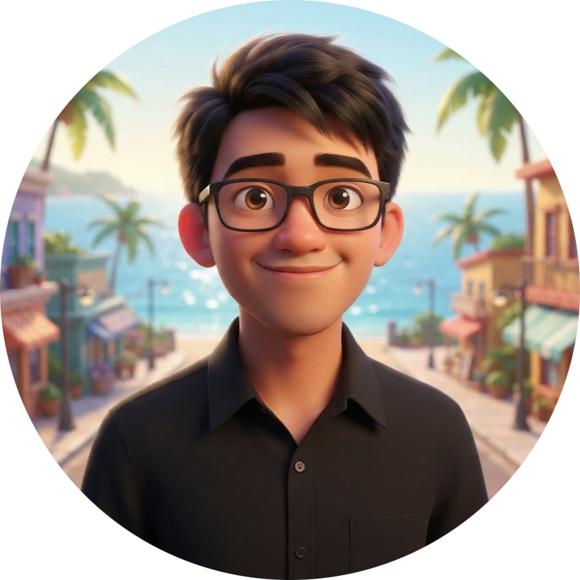
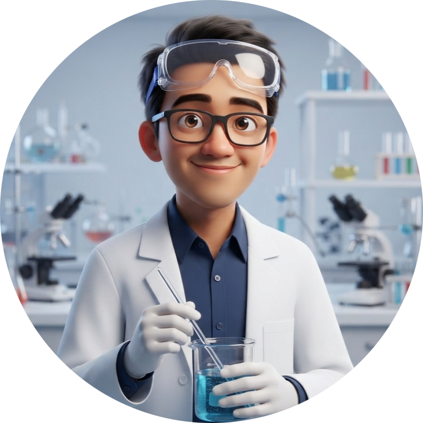
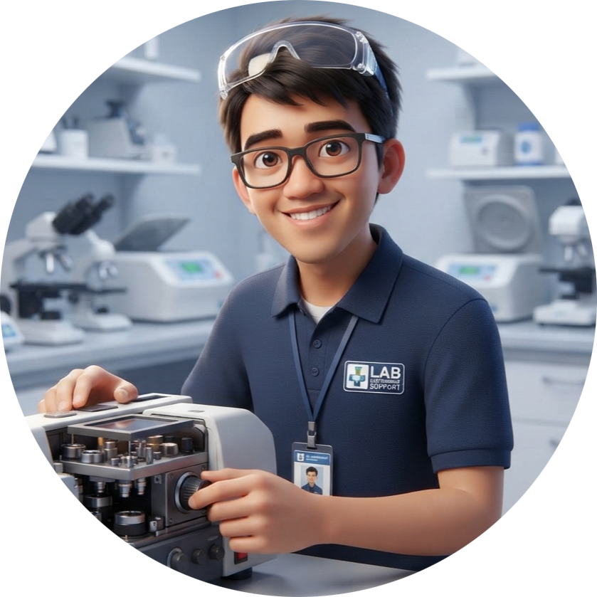
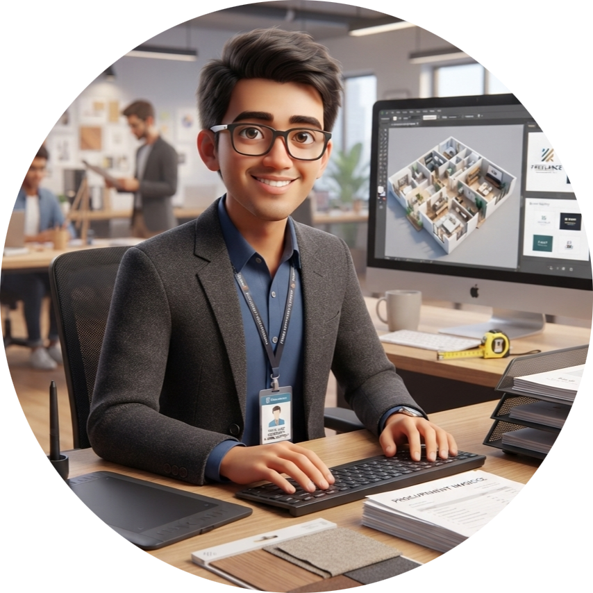

Agung Kurniansyah
Chemical / Industrial Engineer, Design Graphic/Visual, Writer, Assistant
📍 Kab. Garut, Indonesia[span_0](start_span)[span_0](end_span)
📧 agungkurniansyah39@gmail.com[span_1](start_span)[span_1](end_span)
📱 0851-2365-7385[span_2](start_span)[span_2](end_span)
Profesional berpengalaman di bidang analisis laboratorium, teknik industri, dan technical support engineering dengan rekam jejak kuat dalam pemeliharaan instrumen, manajemen proyek, serta peningkatan efisiensi operasional[span_3](start_span)[span_3](end_span).
Keahlian & Kompetensi
Laboratorium & Farmasi
Manajemen & Operasional
Desain & Perangkat Lunak
Pengalaman Kerja Profesional

Supervisor R&D Laboratorium Analysis - PT Guardian Pharmatama & PT Kalbe Farma
- Memimpin tim merancang dan memvalidasi metode analisis serta SOP[span_5](start_span)[span_5](end_span).
- Mendukung pendaftaran izin edar (NIE) produk baru[span_6](start_span)[span_6](end_span).
- Menjalankan program perbaikan mutu seperti Suggestion System (SS) dan Quality Control Circle (QCC)[span_7](start_span)[span_7](end_span)[span_8](start_span)[span_8](end_span).

Technical Support / Service Engineer (CSE)
- Melakukan perawatan, perbaikan, dan kalibrasi instrumen analitis untuk meminimalkan downtime[span_10](start_span)[span_10](end_span)[span_11](start_span)[span_11](end_span).
- Memberikan konsultasi teknis produk dan penanganan masalah pengguna[span_12](start_span)[span_12](end_span).
- Mencapai tingkat penyelesaian uji coba (*trial*) tinggi untuk mendorong penjualan produk[span_13](start_span)[span_13](end_span).

Assistant Operations, Financial & Customer Relationship
- Mengelola operasional harian, administrasi keuangan, serta mengawasi proyek renovasi properti[span_15](start_span)[span_15](end_span).
- Membangun kemitraan strategis dengan arsitek, desainer interior, dan kontraktor[span_16](start_span)[span_16](end_span).
- Mengoptimalkan rantai pasok material konstruksi untuk menekan pemborosan dan menjaga arus kas[span_17](start_span)[span_17](end_span)[span_18](start_span)[span_18](end_span).

Construct Design, Graphic Design, Visual & Writer (Freelance)
- Membuat gambar teknik interior/eksterior, denah, dan estimasi anggaran konstruksi skala kecil[span_20](start_span)[span_20](end_span)[span_21](start_span)[span_21](end_span).
- Merancang identitas merek, logo, dan poster digital pemasaran untuk klien[span_22](start_span)[span_22](end_span)[span_23](start_span)[span_23](end_span).
Portofolio Proyek Terpilih

Project 01: Perumahan Taman Bukit Alam (Main Gate Design)
- Perancangan desain eksterior gerbang utama kompleks perumahan dengan gaya Modern Contemporary[span_25](start_span)[span_25](end_span).
- Fokus pada struktur pilar tinggi, pos keamanan, serta tata lansekap minimalis[span_26](start_span)[span_26](end_span).

Project 02: Mr. Z's Private Residence Design
- Perencanaan desain konstruksi interior dan eksterior rumah tinggal bergaya Modern Classic dua lantai[span_28](start_span)[span_28](end_span).
- Pembuatan denah 2D, visualisasi 3D, serta tata letak area dapur dan ruang keluarga[span_29](start_span)[span_29](end_span).

Project 03: Nature Sip Cold Pressed Juice (Branding)
- Merancang materi promosi produk cold-pressed juice dengan klaim kesehatan (100% Fresh, No Add Sugar & Water)[span_31](start_span)[span_31](end_span).
- Mengembangkan konsep visual sketsa monokrom bahan alami dengan botol produk sebagai titik fokus[span_32](start_span)[span_32](end_span).
Mari Terhubung
Tertarik untuk berkolaborasi atau mendiskusikan peluang profesional? Silakan hubungi melalui:
- 📞 Telepon/WhatsApp: 0851-2365-7385[span_33](start_span)[span_33](end_span)[span_34](start_span)[span_34](end_span)
- 📧 Email: agungkurniansyah39@gmail.com[span_35](start_span)[span_35](end_span)[span_36](start_span)[span_36](end_span)
- 💼 LinkedIn: linkedin.com/in/agungkurniansyah39/[span_37](start_span)[span_37](end_span)